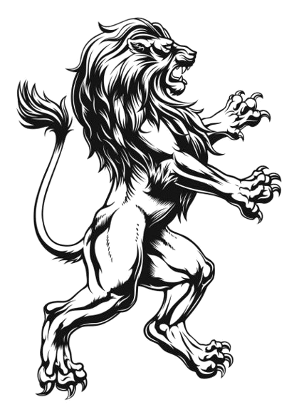
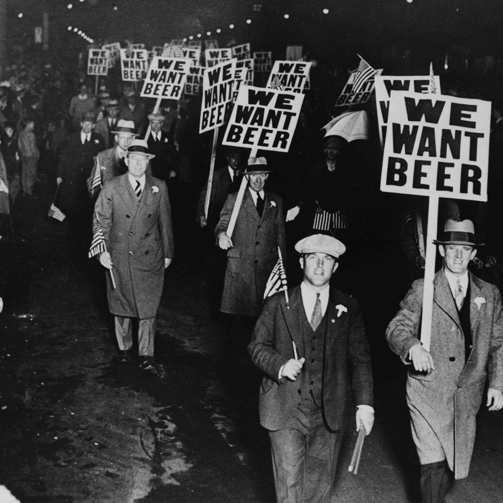
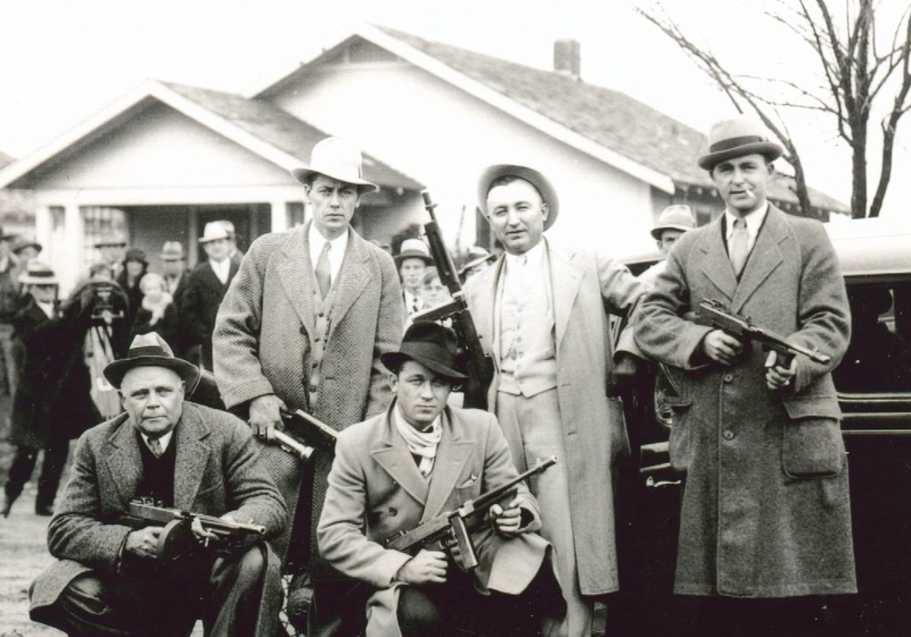
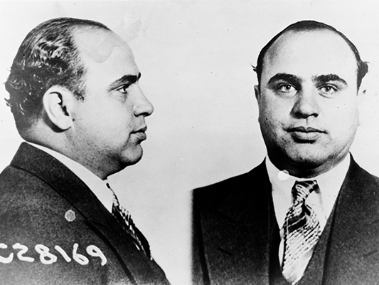
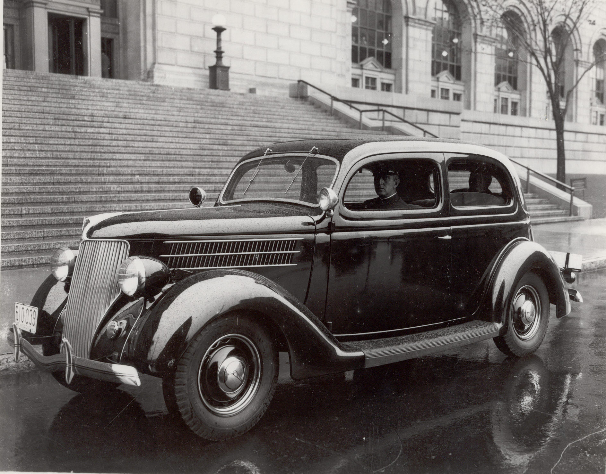
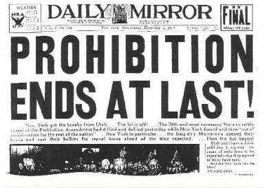
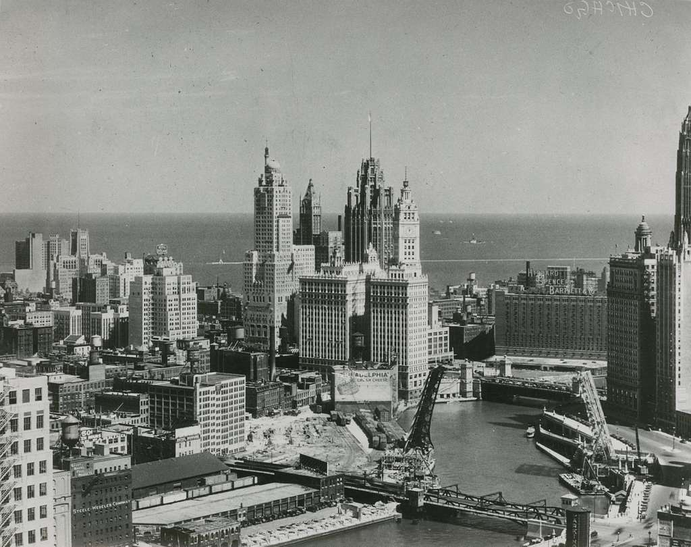

The English Two Herald
The 1920’s, also known as the Roaring Twenties, was a significant time period in American history. Starting almost immediately after the end of World War 1 in December of 1918, the decade was fueled by the joy and relief of the American population. However, this joy led to a growing frivolity, and at the time, alcohol was a very popular drink. People began getting drunk. So much so that in 1919 the 18th Amendment was passed, placing a ban on the brewing, distribution, and purchase of alcohol. So began the Prohibitionary Era. The government ban on alcohol soon led the public to search for new ways to obtain the drink, and within a year bootleggers and organized crime gangs began to crop up all over the nation. The legacy of these men was often one of violence and bloodshed, but there is a somewhat more positive side that exists as well. Bootleggers and crime syndicates, while on the whole not an obvious benefactor to society, did lead to several developments which are beneficial, and that is where it begins to get interesting.

The first and arguably most important development that occurred as a direct result of organized crime was the formation of the FBI as we know and recognize it today. At the start of Prohibition, the FBI had a similar but different name: the Bureau of Investigation. The team was small—less than 1,000 members. It was also underfunded, underarmed, and overall, underpowered, unable to do anything against the proliferation of crime throughout the nation. There were even some situations where the investigators were themselves at fault, such as in 1923, when “the nation learned that Department of Justice officials had sent Bureau agents to spy on members of Congress who opposed its policies” (FBI). The Bureau also had a “growing reputation for politicized investigations" (FBI), which often resulted in persecution being doled out with a less than even hand. As shown above, the Bureau at the time lacked a sense of direction. They were a small government group, without a dedicated job to perform. But that all soon changed. As crime grew and developed, so did the Bureau. In 1935, the Bureau, under the direction of J. Edgar Hoover, officially changed its name to the Federal Bureau of Investigators, or the FBI. The FBI was improved, its membership count swollen past recognition, and at the forefront of modern crime fighting. The FBI is still in full operation today, and forms one of the pillars of modern crime fighting.

A lesser-known facet of organized crime was the fact that it had laws, or rules between gangs as established by those self-same gangs. These laws helped create a rudimentary peace between gangs, and helped prevent gang-wars on a larger scale than already were. The laws served to end gang rivalries, as they dictated that no two gangs in the same city could perform the same function. For example, no two gangs in the same city could smuggle alcohol; only one of them could. As Leslie Nicole Logan writes in ‘An Economic Analysis of Organized Crime,’ exclusionary practices “[prevented] entry into an industry or area by other firms. In the case of bootlegging…would prevent small operators from…gaining a major foothold within the area. Such agreements are obvious throughout organied crime. The Torrio pact was essentially such an agreement. Each gang was given a specific region in which to operate. No other gangs were allowed to infringe upon their Competitors' territory. In addition, gangs were given only particular rights within those territories. One gang was assigned liquor rights, [etc]. Another…agreement [was] reached by all interests in New York near the close of Prohibition. This nationwide territorial division was intended to maintain peace within gangland, always a concern” (Logan). The facts presented offer an insight into the functionings of crime syndicates, as they demonstrate a successful feat of gang inter-coordination. As a direct result of the exclusionary pacts created by different gangs, there were fewer gangs per allotted ‘zones’ and each gang performed a different job. Some gangs, including the gang Al Capone, famous gangster, belonged to, even used their gains to benefit society, occasionally helping a person widowed by the gang, or even random people in the city within which the gang operates. As stated by Al Capone himself,
"I'm a businessman. I've made my money supplying a popular demand. If I break the law, my customers are as guilty as I am."

Equally as important and also intrinsically connected was the rise of bootlegging. Bootlegging and organized crime shared a decent amount of overlap; many syndicates specialized in the illegal procurement and sale of alcohol, and many independent bootleggers worked as partners with various criminal gangs. Bootlegging, as it was very popular, soon came to the attention of various government leaders, and as a result several laws we see today exist as a direct result of it. As Tom Head, PhD, writes in his paper ‘Bootleggers and G-Men’, “At the same time, the Prohibition era also brought progressive, business-oriented reform to city and state governments. Nowhere was this more apparent than in the field of criminal justice. Beginning in Cleveland, Ohio, in 1921, reform-minded businessmen and lawyers, worried about the apparent lawlessness of the time, formed commissions to investigate the nature of crime and the workings of law enforcement in their jurisdictions. The results—crime commission reports for Cleveland, Missouri, Illinois, and elsewhere— analyzed how criminals evaded the justice system and how law enforcement operations could become more efficient in order to better control crime” (Head). After the fall of bootlegging, the enterprise was examined and various parts were analyzed, leading to more effective law enforcement. As a result, the police were able to better fight crime as they had been—in essence—handed the book which contained every crime rule ever written, and they were able to learn from it.

One of the most overlooked ‘benefits’ of organized crime and bootlegging was simple; Prohibition was repealed. Due to alcohol being illegal, legal saloons were quickly replaced with illegal speakeasies—thousands of them. Speakeasies were incredibly popular, with author Heather Kauffman noting that by 1925, it “was estimated that there were anywhere from 30,000 to 100,000 speakeasies in New York City” (Kauffman). As is visible by the amount of illegal establishments in New York City alone, Prohibition was unenforceable. Additionally, “law enforcement was simply not up to the task of enforcing Prohibition. Federal agents were hired in haste, initially bypassing civil service tests, and were poorly paid. Many proved incompetent, corrupt, or both, often accepting bribes from bootleggers or becoming bootleggers themselves” (Rainey). As Prohibition continued to make itself more and more infamous, many people started to turn against it, with the 21st Amendment officially being ratified on December 5th, 1933, officially signalling the end of Prohibition.

Bootlegging and Organized crime had risen to prominence in the Prohibitionary Era, even enough to be denoted as its heralding traits. But despite their inherently negative nature, they did bring about certain facets of our society as we see it now. Several pieces to our society were created during the reign of bootleggers. The FBI was born from a small group of private investigators, sprung out of the need for better defense against criminal activity. Laws were passed which prevented later activities from reaching the same heights as they did during Prohibition. Crime changed from rough village gangs to powerful syndicates, writing rules to keep themselves in order, thus preventing a large amount of otherwise-would’ve-happened gang violence, and eventually, as the ultimate culmination, Prohibition was finally repealed on December 5, 1933, bringing to a close the era of illegal alcohol. This is important to recognize as it is a part of American History, and has led to many developments afterward. One thing that is apparent is the notion that change cannot be forced; it must be accepted by the people, and Prohibition is a perfect example of where that did not happen.
Head, Tom, and David B. Wolcott. “Bootleggers and G-Men: 1914–1933.” Crime and Punishment in America, Facts On File, 2010. American History, online.infobase.com/Auth/Index?aid=17440&itemid=WE52&articleId=196438. Accessed 14 Dec. 2023.
Kauffman, Heather. Prohibition, Infobase, 2006. American History, online.infobase.com/Auth/Index?aid=17440&itemid=WE52&articleId=592471. Accessed 14 Dec. 2023.
Logan, Leslie Nicole, "The Bootlegging Business: An Economic Analysis of Organized Crime During Prohibition" (1999). Chancellor’s Honors Program Projects. https://trace.tennessee.edu/utk_chanhonoproj/323.
Rainey, Jane G. “Prohibition and Crime.” Encyclopedia of American Law and Criminal Justice, Revised Edition, Facts On File, 2012. American History, online.infobase.com/Auth/Index?aid=17440&itemid=WE52&articleId=356819. Accessed 14 Dec. 2023.
The FBI and the American Gangster, 1924-1938. 5 Aug. 2016, www.fbi.gov/history/brief-history/the-fbi-and-the-american-gangster.